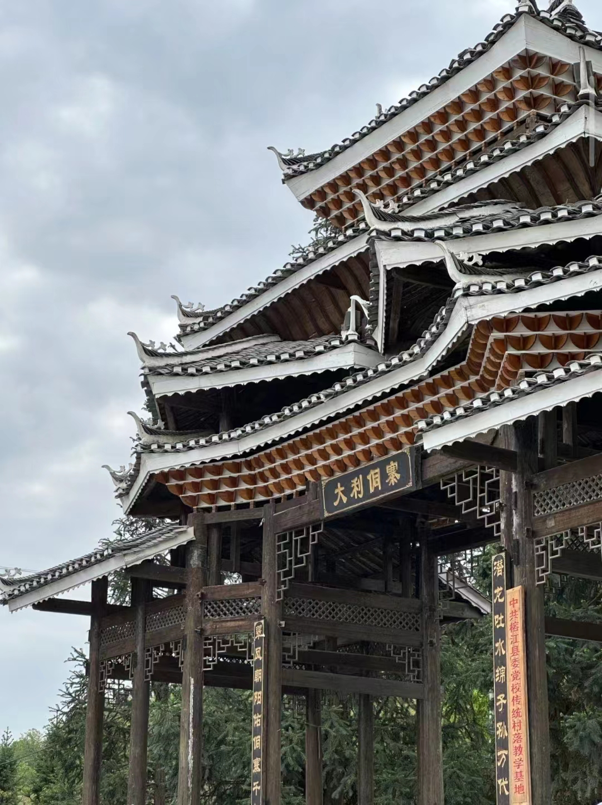

大利侗寨，位于中国贵州省黔东南苗族侗族自治州从江县境内，是中国著名的侗族风情建筑群落之一，因其特色鲜明多样的建筑群，被誉为侗族建筑的“露天博物馆”。大利侗寨建于明代，历史悠久，坐落在群山环抱的气候宜人的地理位置上，
拥有秀丽的自然风光和独特的民族风情，是侗族文化的重要保护村寨，其以独特的风俗、传统手工艺和建筑特色而闻名，是游客了解侗族传统生活和文化的理想场所。当地有丰富的传统节日，如二月二、三月三、四月八、六月六、吃新节、
侗年等特色节庆文化，届时村民会穿着传统的侗族服装，表演独具特色的世界级非遗项目侗族大歌和器乐表演。大利侗寨在2012年被国家住建部公布为“中国第一批传统村落”，2013年大利古建筑群被国务院公布为第七批全国重点文物保护单位，
2014年被国家住建部公布为全国第六批历史文化名村。大利侗寨乡村旅游资源丰富，2015年被国家文物局确定为全国51个保护利用综合试点的传统村落之一，2017年被国家民委命名为第二批中国少数民族特色村寨之一。大利侗寨作为中国历史文化名村，文化底蕴深远，
个性鲜明突出，是原生态民族文化和原始自然生态的完美结合，是一片远离尘埃与喧嚣的净土，被誉为“深山明珠”。